Geometric architecture
The blockout favors right angles, massive structures and symmetrical views. It suggests an AI that values efficiency and order over human comfort.
Welcome, I'm a junior game designer with a passion for level design. I like most types of games but my favorite types are MMORPG, Survival Horror and Hero shooters games. I'm looking for an internship from September 2027 in France.
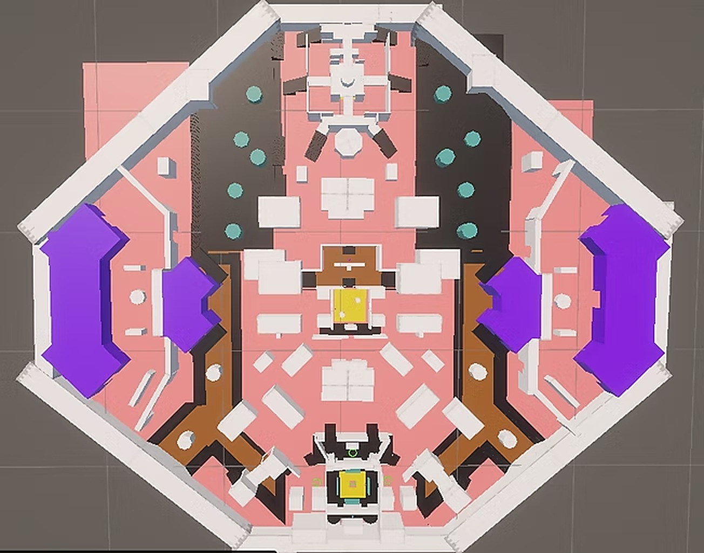
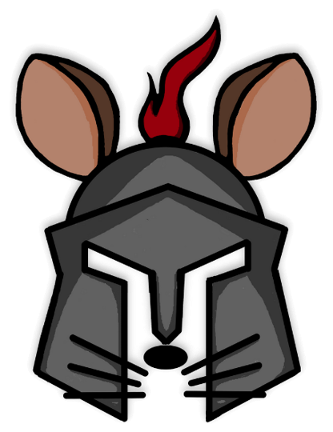
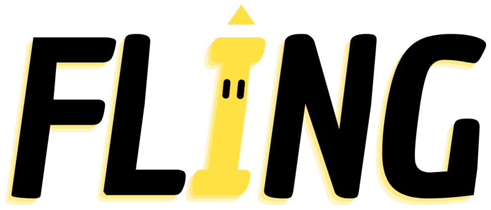
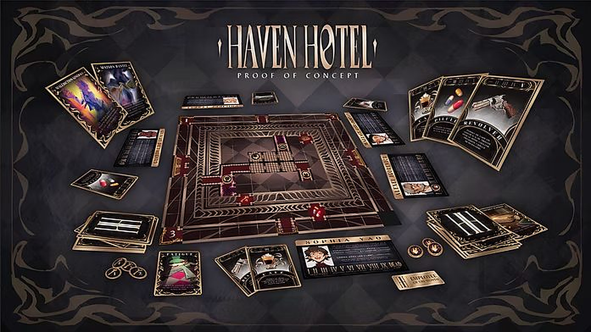
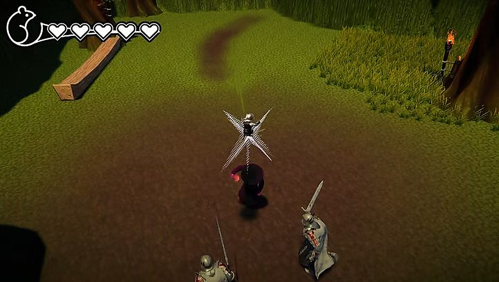
A 3D action brawler
A cursed knight turned into a mouse. Bounce on enemies with the Pogo, dash, and take down the final boss I designed.
Game designLevel designBoss designUnity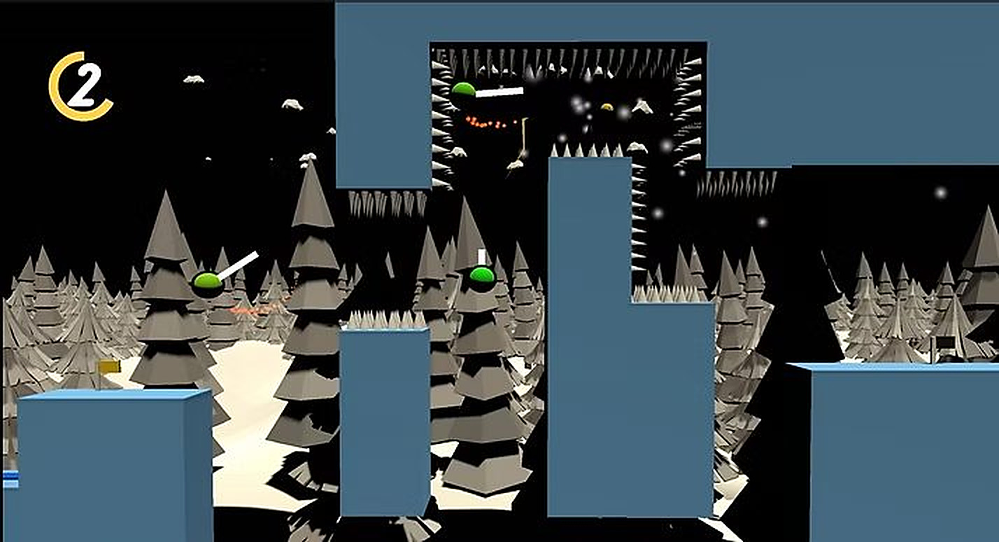
A colorful 2.5D platformer
An alien slime out to destroy a planet. Aim one way and whatever you fling flies the other way. The USP is inspired by the “Bash” from Ori and the Blind Forest.
Game designLevel designGame feelUnityA cooperative / competitive board game
Trapped in a cursed Scottish hotel, race for the key. Help each other, or betray, before the curse takes over.
Game designCard designPrototypingA dynamic variant of Overwatch’s “Flashpoint” mode. The capture point activates at random, which forces players to adapt constantly and to manage their rotations carefully.
I designed a complete map for it in Unity with ProBuilder, and wrote a Level Design Document to back every choice.
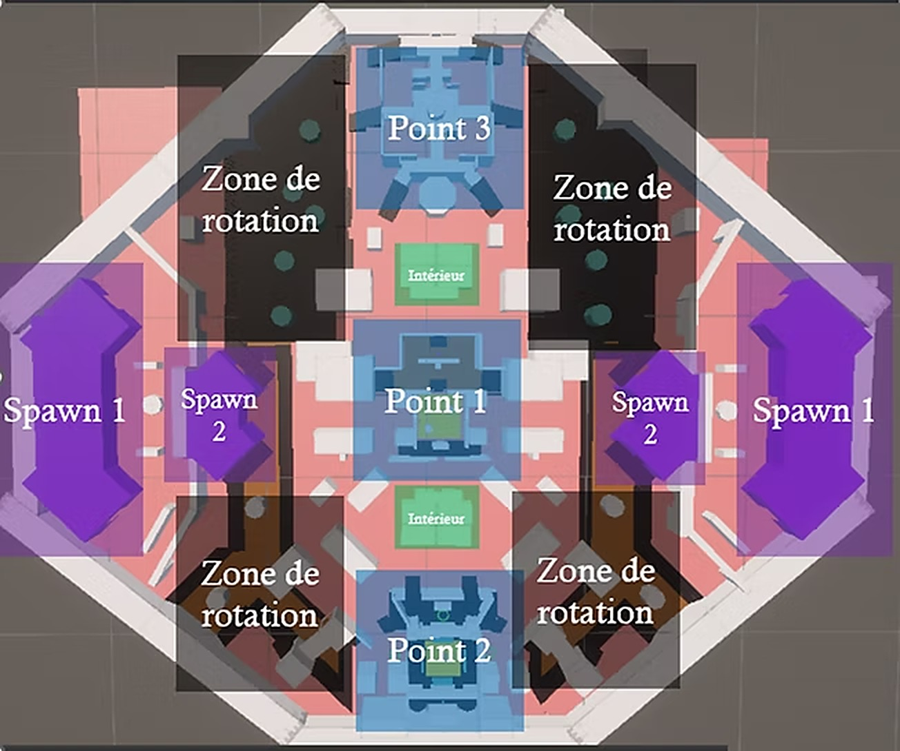
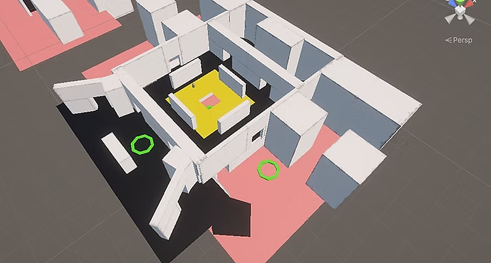
Chernobog is the God Program of global security, based in Helsinki, Finland. The map is its lair: a deactivated AI factory that still feels influenced by the program. I chose a raw, oppressive look that reflects its cold power.
The blockout favors right angles, massive structures and symmetrical views. It suggests an AI that values efficiency and order over human comfort.
The capture points sit in the heart of dense server rooms. They are not only decor: they create sightlines and cover.
Along the rotation routes and in the spawns, deactivated Omnic frames are stored. It suggests mass production and an army waiting, which ties the map to the lore.
To make the map viable, I relied on my deep knowledge of Overwatch and on the rules of level design in team-versus FPS: main paths, flank routes, and health packs that are either halfway along a route (Mega) or close to the point (Mini).
I first modeled the capture areas to offer varied cover: verticality for snipers, closed spaces for flankers.
The rotation zones between points avoid punishing choke points and offer clear ways around.
I built the whole map in ProBuilder, which taught me to iterate fast on a blockout.
I wrote a complete Level Design Document alongside the map. It lists each of my design intentions, from player flow diagrams to the balance of spawn distances.
This rigor makes sure every element placed with ProBuilder answers a precise gameplay need, and makes future iterations easier.
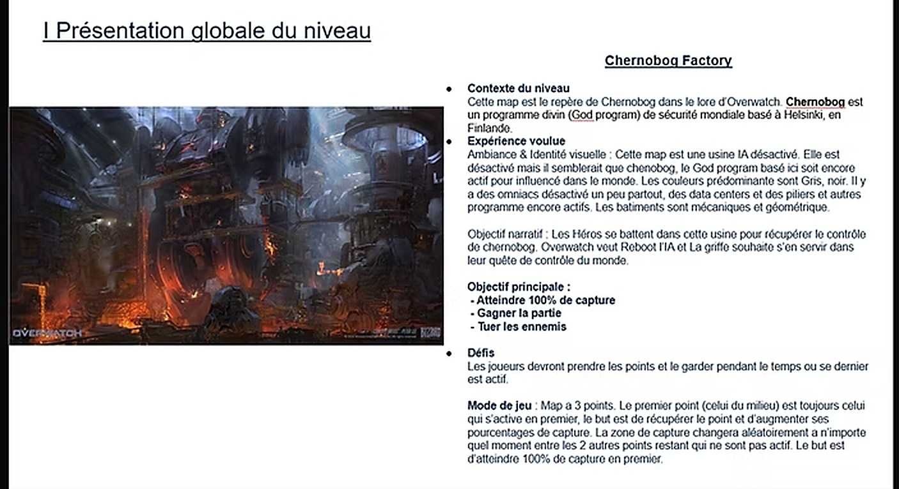
This project will keep evolving. The map and its document are not finished, and I will update this page as they improve.
A colorful 2.5D platformer where you play a cute alien slime out to destroy a planet. You aim one way, and whatever you fling flies the opposite way.
I worked on three things: game design with the team, a complete level, and the game feel and juiciness of the whole game.
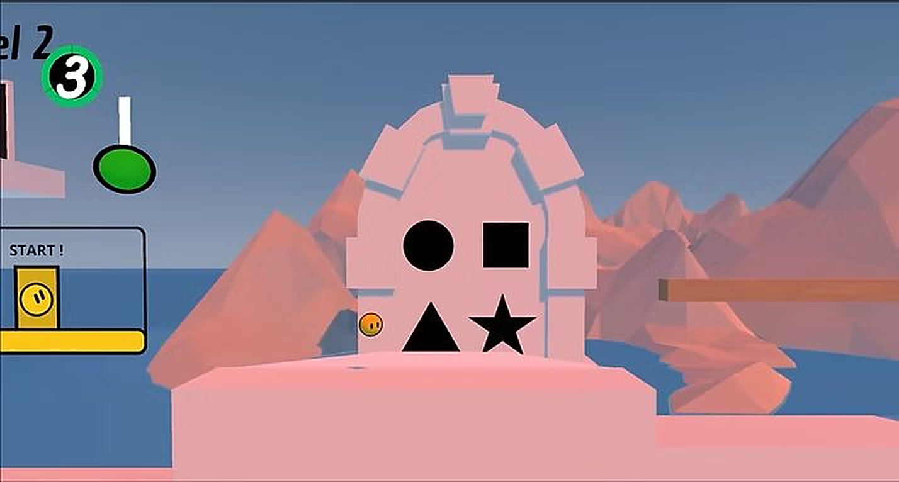
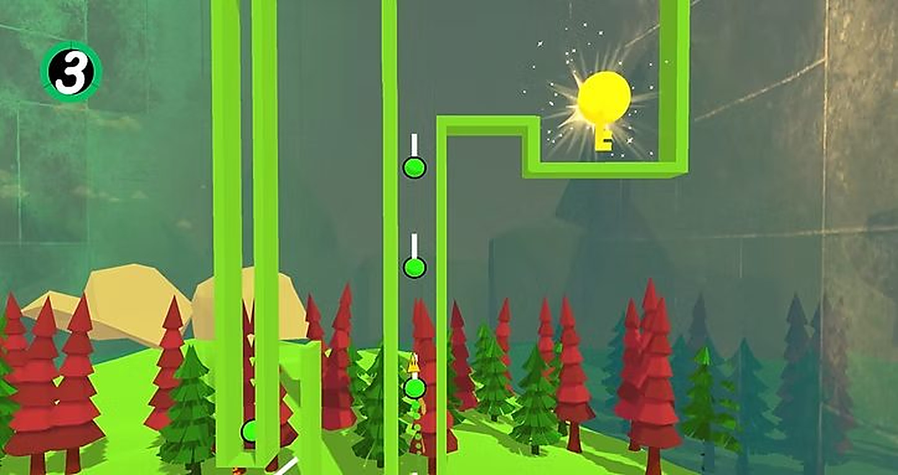
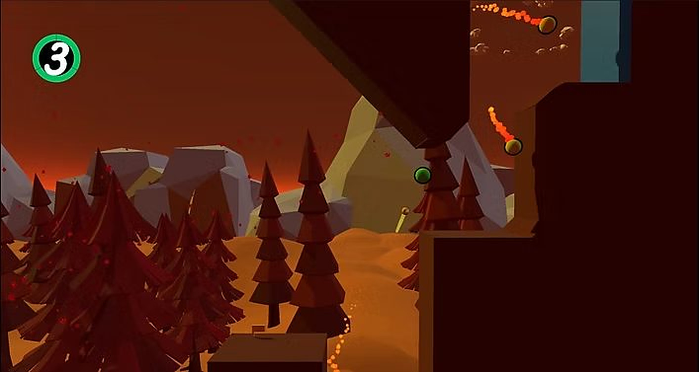
The Fling is inspired by the “Bash” from Ori, with one key twist. The player aims freely in the direction they want to move, while the object or ball they fling goes the opposite way.
It creates dynamic situations that demand precision, good trajectories and timing.
Everyone took part in the discussions, especially for big or unclear choices. When possible we decided by majority vote. When a choice had to be proven in play, we ran playtests, for example for the aiming arrow of the main mechanic.
The 3C (camera, controls, character) was built quickly. That left more time to work on levels and mechanics.
We chose a colorful, “cute” art direction on purpose. It contrasts with the fact that you are the villain, and it helps game feel and readability.
The player is an alien slime whose goal is to destroy a planet made of distinct seasonal zones. A hub lets them replay levels in any order, but the last level stays locked on a first playthrough so progression stays coherent. The whole game lasts about 15 minutes.
I designed a complete level, from the first idea to the final playable version. It is level 5, the second-to-last level of the game. It had to introduce a new mechanic while keeping the overall rhythm of progression. It takes place in winter, in a factory.
I analysed several platformers to find good references and the right pacing for this point of the learning curve.
I drew the level on paper around a new feature, the industrial presses, consistent with the lore and the art constraints.
The new mechanic needed a short, clear tutorial inside the level, placed where the player already has some mastery.
Once the paper version was approved, I built the level in Unity and ran internal playtests to tune balance, rhythm, difficulty and readability.
After many adjustments, the level was engaging and consistent with the art direction, the lore and the global pacing, within the time we had.
Skills used: analysis, pacing, engine integration, iteration and teamwork. This project strengthened my 2D platformer level design a lot.
The team was organised by areas of responsibility, and I was in charge of game feel and juiciness. It let me develop skills I had barely used before.
I looked for colorful, expressive and cute references, such as Kirby, to find a visual treatment that fits our art direction.
I picked and integrated free assets in Unity to experiment with player feedback, action readability and how satisfying interactions feel.
I adjusted animations, colors, timings and micro-events to make visual signals clearer and the gameplay hit harder.
I also made the link between the different teams with internal documents:
This showed me how important game feel is in the production pipeline, and improved how I work with other creative disciplines.
A 3D action brawler and platformer where you play a knight cursed into a mouse. Your main attack is the Pogo: bounce on enemies and mushrooms, and fight in the air.
We were five game designers and no one else. I worked on game design, on the implementation of the levels, and I designed the final boss and its patterns.
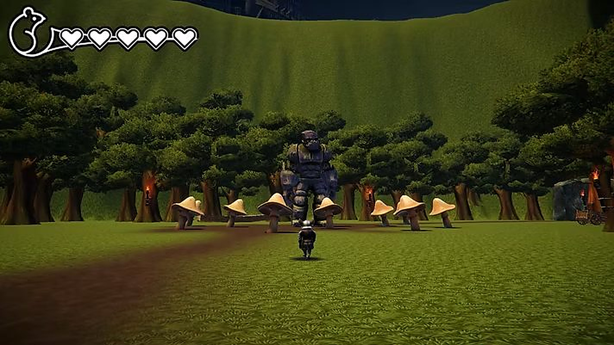
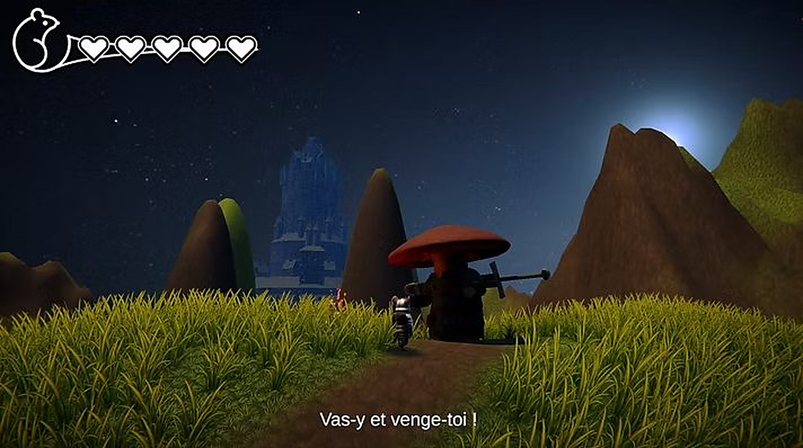
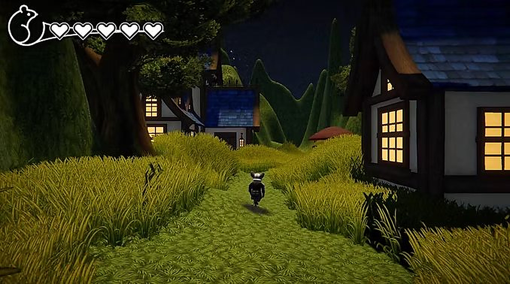
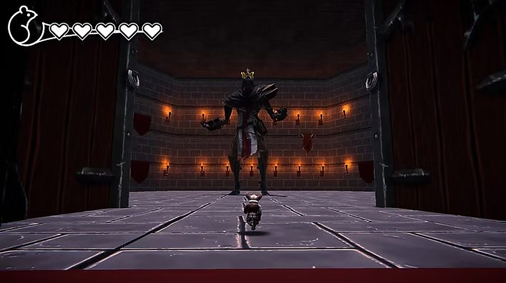
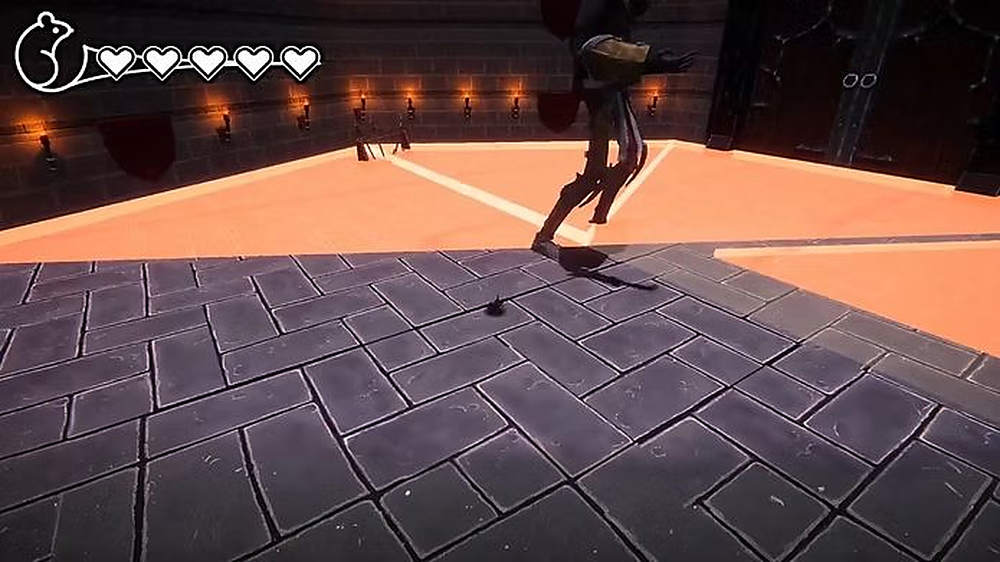
The Pogo, inspired by Hollow Knight, is the player’s main attack. We combined it with a dash to make the gameplay more dynamic and give better control.
We found this mechanic quickly with a collaborative sticky-note method, followed by debates and iterative tests.
The Pogo gave combat a vertical dimension. It pushed us to imagine varied and creative level design situations.
We tested the general game feel a lot, adjusting timing and visual and sound feedback to make actions more satisfying.
We kept debating whether the Pogo should share the jump button or stay on the attack button. Playtests could not settle it, so we let the player choose in the settings. It shows how much we care about player experience.
We built a light fantasy world. The player is a cursed knight, turned into a mouse by the mage king after an adventure with the king’s daughter. Locked in a prison hidden deep in the woods, they must cross varied levels, beat enemies and take on challenges to get revenge and become human again.
This light lore gives meaning to the mechanics, guides the level design and keeps the player engaged. It supports the vertical, dynamic gameplay and puts our signature mechanic, the Pogo, in the spotlight.
I turned the levels that our level designer built in ProBuilder into final assets that fit the game.
I followed the dimensions set by the level designer exactly.
I slightly adapted the visuals so they fit the universe and the art direction of the game.
I checked the proportions and accessibility of every space, obstacle and interactive element so the Pogo works smoothly.
The result: levels that are functional, visually coherent, and true to the vertical, dynamic gameplay we imagined.
I designed the whole final boss: its patterns, its movements and how it fits into the existing gameplay.
I looked at giant bosses in other games, especially those with complex AOE attacks, to create varied and engaging patterns.
To save time and not overload the programmers, I adapted the patterns to the enemy system we already had, which only uses AOE attacks.
The boss has three main attack patterns, plus one attack that summons the game’s basic enemies. Each pattern pushes the player to use all their abilities, especially the Pogo and the dash.
A cooperative / competitive board game set in a mysterious Scottish hotel. You are a tourist trapped in a cursed place, and you must find a key and escape before the curse drives you mad.
Haven Hotel is my first student project, in my first year at Isart Digital. I worked on game design, the character cards and the paper prototype.
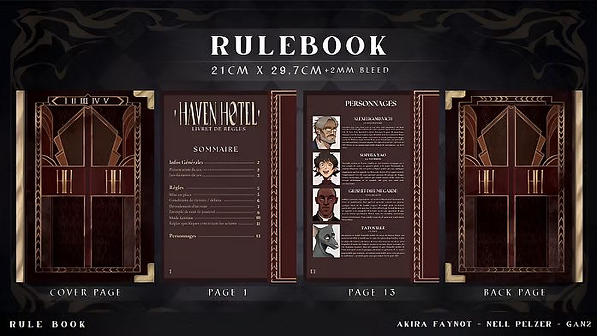
We discussed the design at length before choosing a cooperative / competitive format.
Players oppose each other, but they can negotiate, ally or help each other for a while, depending on their interest.
The board is made of tiles that players reveal as they go, creating their own path. Special “key” tiles let you get a key, which you need to escape through an exit door on the edges of the board.
The number of doors changes with the number of players. This makes the game more competitive: some players try to steal the key from their opponent.
Players secretly draw item cards. They bring bonuses and interactions, and a climate of mistrust.
Every turn starts with an event read aloud, which creates stress and unpredictability.
Players gather curse points as turns go by. Moving forward gets more and more dangerous, and the urgency grows.
The game takes place in a mysterious Scottish hotel where players are tourists trapped in a cursed place. The curse grows each turn and makes the characters more and more unstable. It pushes players toward selfish or sacrificial choices to survive.
This naturally mixes mutual help and mistrust: you can take advantage of others, slow them down, steal from them, or leave them to die in the hotel if it lets you get out before madness takes over. Everything supports the central theme: the fragile balance between shared survival and betrayal.
I studied several board games to build an ability system that is consistent, asymmetric and balanced.
I designed the curse system. It increases each turn and changes what players can do, so the tension of the theme also rises through the mechanics.
I gave each ability an action point cost. Some abilities are cheap but situational, others are stronger but more expensive. It took several iterations after playtests.
Each character has a short backstory. It adds immersion and gives meaning to their powers, their identity and how they might behave in the hotel.
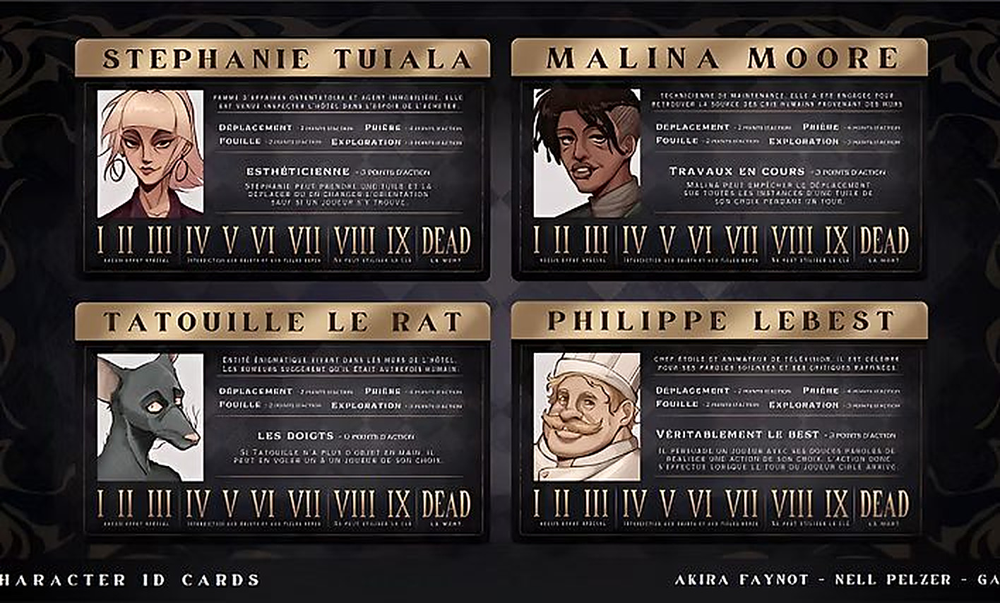
I helped build everything we needed for the playtests. I designed the Event cards that bring tension and uncertainty to every turn.
I also helped make the physical parts of the game, such as the pawns and other board components. I took inspiration from existing board games to make them clearer, more readable and easier to handle.
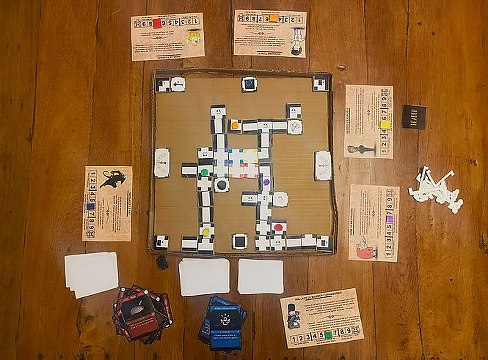
An eight-week internship as a game designer during my second year of the Game Design Bachelor at Isart Digital. Babasport works in leisure and events, with playful experiences that help people discover cities and cultural places.
My main mission: design and lay out treasure hunt booklets for different cities, and for some museums.
Babasport uses games to make people discover a place or a city. Players move around, observe their surroundings and solve puzzles with the help of a booklet.
It was a new world for me: events. It is not directly my goal, since I mainly want to work in a video game studio, but it taught me a lot.
My main contact sent me the cities to handle and the information I needed. I sent back the booklets as PDFs and uploaded the files to Canva and Google Drive.
Notion was our common database with the other interns. We logged the selected places of each city and their descriptions. I already knew the tool, but using it in a team at work gave me a new way to track a project.
The team talked mainly on Slack, which I discovered when I arrived.
My job was not only to lay out booklets that were already prepared. For the city treasure hunts, I also helped build the content.
I researched the interesting or important places of each city and grouped them in a Google Maps list so I could compare them.
I looked at each place with Google Maps 360° view. It showed me which spots made the best route and which ones could be used in a puzzle. The chosen places and descriptions went into Notion.
Puzzles were usually already designed. I integrated them in a coherent way and worked on their wording so players could understand them.
I created a puzzle myself that works anywhere, and it was reused in several booklets. It made me think about flexible content that fits many contexts.
City booklets share one graphic identity. I adapted the content to that structure, keeping it readable and attractive. I mainly used Canva, Google Docs and Photoshop, then exported PDFs for the team.
I worked on the Confluences museum, the Arts et Métiers museum and the Armée museum. Each one needed its own graphic identity, so I could be more creative with the visual direction while keeping the route and puzzles clear and pleasant.
I made a large number of booklets, at a pace of about one city per day.
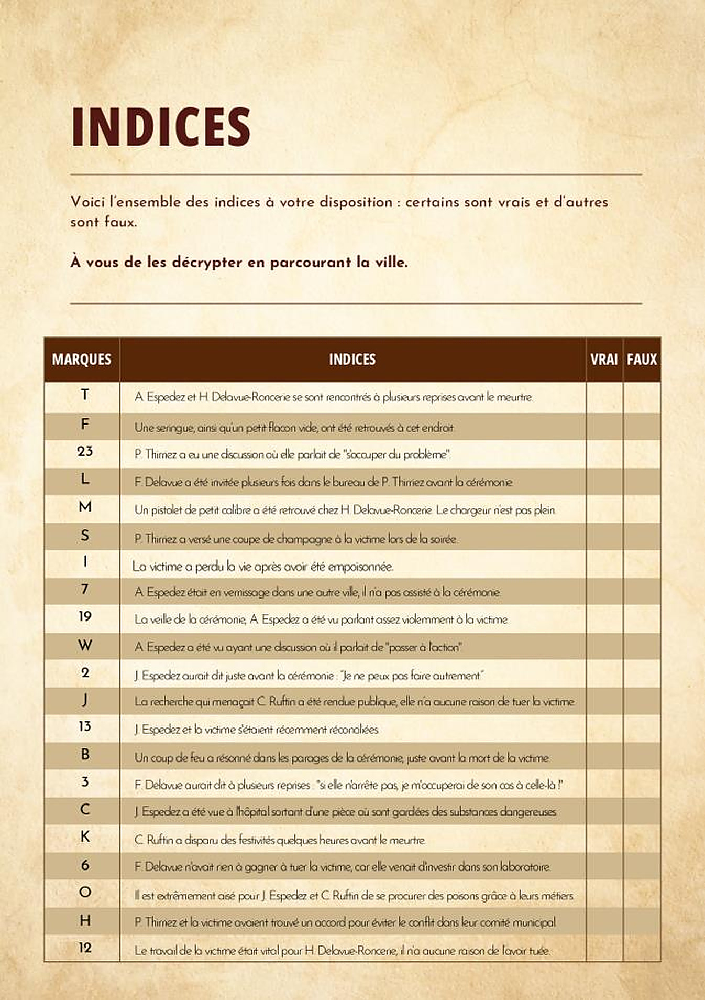
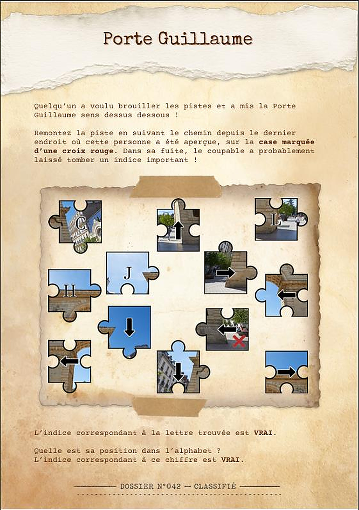
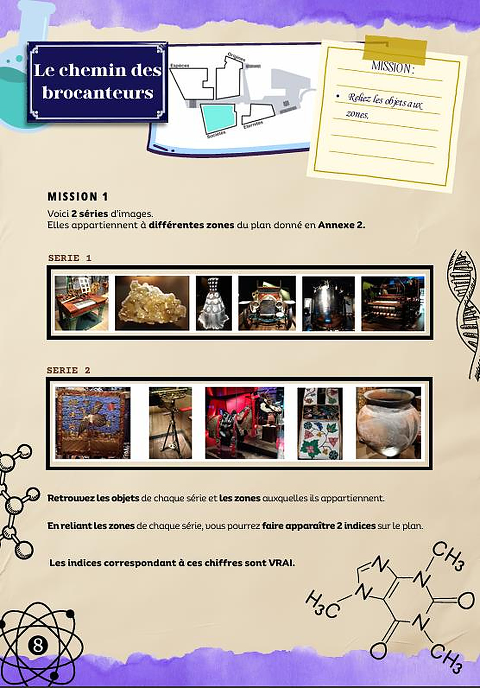
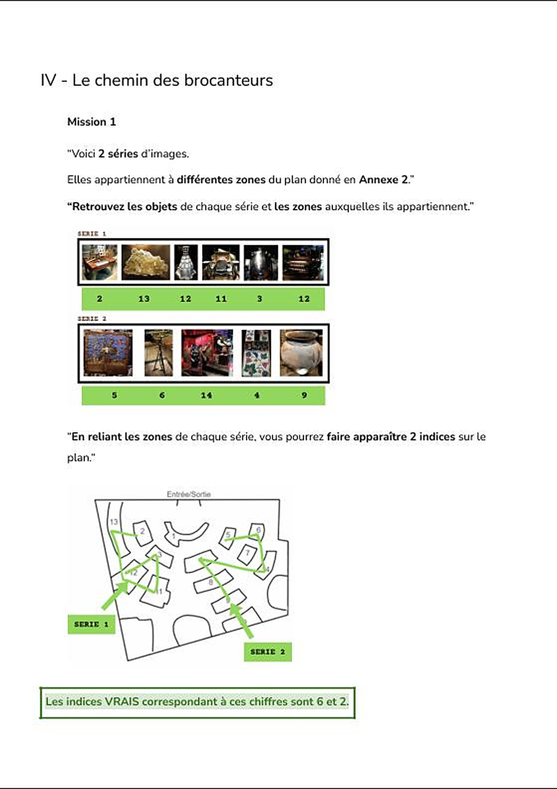
This is the puzzle I designed myself for the internship. It is built to be reused: it was added to several booklets.
Players look at the places on the list and connect the numbered points in order. The path they draw reveals a letter on the grid. That letter then leads them to a clue in the clues appendix, and the clue turns out to be false.
The example here uses places from Nantes, but the mechanism works with any set of places.
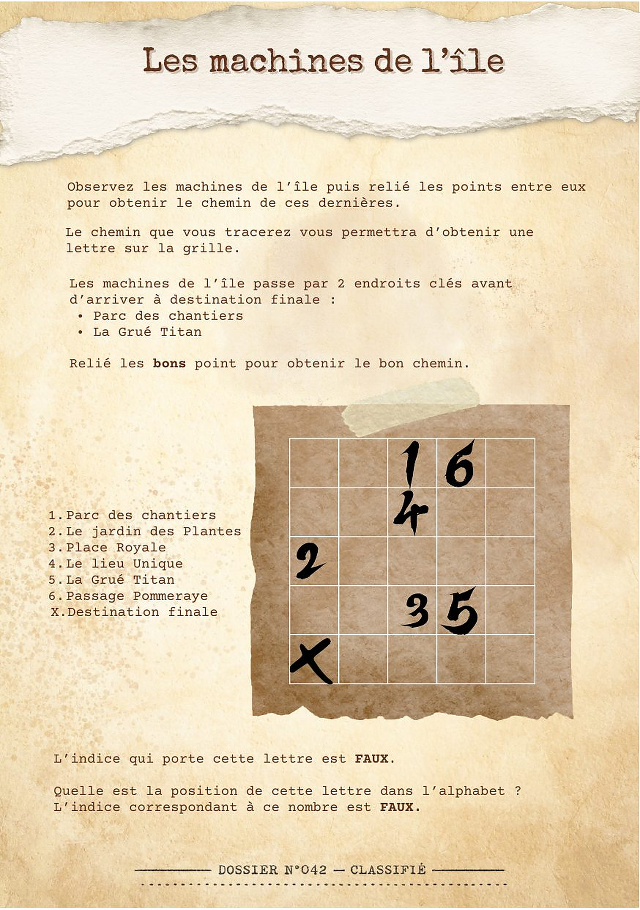
I had no major difficulty. The tasks were accessible thanks to my training, and communication with the team was easy. The challenge was to handle a new city quickly while keeping good quality.
I learned to find the right information fast, choose the best places, organise my data and produce a complete booklet within a set deadline.
Even with puzzles already designed, I had to think about how a player would understand the instructions and use the information. It is close to game design and I will reuse it in my future projects.
I trained a colleague to make the treasure hunts. To do that I had to structure my own method so I could explain it clearly, which improved my communication and teaching.
I used my game design knowledge in a professional context other than a video game studio. I grew in autonomy, in designing game materials, in layout and in thinking about user experience.
I still want to work in video games, but this internship showed me how the principles of play can be used outside virtual games. It confirmed my career goal while widening my options in game design.
An article on where MMORPGs come from, why World of Warcraft took off, and why the genre lost its momentum.
I also mix in my own experience as a player of LOTRO, Lost Ark and more.
Jump to a chapter:
The acronym MMORPG stands for Massively Multiplayer Online Role-Playing Game. It is a genre of game that combines role-playing with a fairly large number of players who play simultaneously online in an open virtual world.
In most of these games, the main goal is to build your story and make your character progress through experience points, so XP, to level up, get new skills and have the most powerful equipment. We can take as examples the best known of them all, World of Warcraft, and plenty of others like Lost Ark, The Lord of the Rings Online or Star Wars: The Old Republic.
To begin, it seems necessary to point out an important thing when we talk about MMORPGs: their business model. It varies from one game to another and can greatly influence the playing experience. Some rely on buying the game itself, like The Elder Scrolls Online, on buying expansions, new instances (or dungeons), new zones, and so on, like in LOTRO. Others rely on a subscription to the game, which gives access to some content, for example to increase the number of dungeons or instances you can do per day, like in WOW or SWTOR. And still others rely on buying items, skins or other elements that are not necessarily needed.
MMORPGs emerged in the 1990s with games such as Ultima Online (1997) and EverQuest (1999). But in reality, they come from text-based online role-playing games, namely the MUDs (Multi User Dungeon). MUDs are text-based role-playing games where players moved around and interacted through written commands.
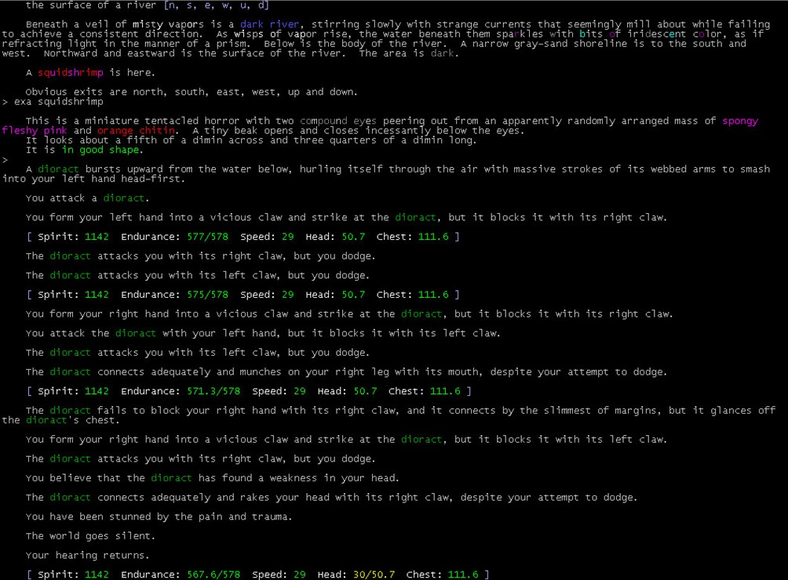
The Habitat project by Lucasfilm Games (now LucasArts) in 1985 is a pioneer of the genre. Unfortunately it would not see the light of day in its original form but was released under the name Club Caribe in 1988. The servers closed the same year in the West, followed by the Japanese servers in 1990.
Habitat did not have commercial success but today it remains recognised as a visionary forerunner of connected virtual worlds and complex online social environments.
Recently, efforts have been made to bring Habitat back to life. In 2017, the Museum of Art and Digital Entertainment undertook the restoration of the original version of Habitat. After four years of work, an alpha version named Neohabitat was launched in June 2017, allowing players to rediscover this pioneer.
In 1991, Neverwinter Nights came out as the first fully graphical MMORPG, that is to say with complete 2D or 3D graphical interfaces, a visual representation of the game that makes it possible to see and interact visually with the virtual world, unlike their predecessors the MUDs, which were entirely text-based.
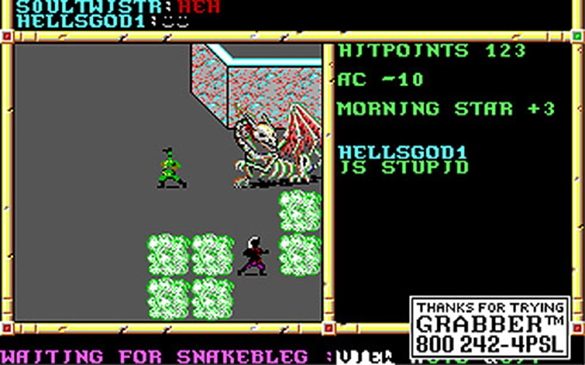
In 1997, Ultima Online came out and was a huge hit for its time, reaching its peak in 2003 with more than 250,000 players and more than 100,000 paying subscribers.
Followed by EverQuest, which left a mark on a good number of players by being one of the first to offer 3D graphics, it became one of the most popular MMORPGs.
The explosion of these games came in the early 2000s with the arrival of a pillar of the video game world, which needs no introduction: World of Warcraft by Blizzard Entertainment, released in 2004.
After the arrival of WOW, the MMORPG formula struggled to renew itself and to offer new exciting experiences. Even though plenty of new games of this kind came onto the market, they ended up flopping or look rather pale next to the titans of the genre, which ended up tiring players, who were eagerly waiting for new things.
Lost Ark and New World are the latest ones to have gotten people talking at their release, thanks to the revival that FF14 gave to massively multiplayer experiences. FF14 gave this genre a new lease of life, notably thanks to its flexible class system that lets players change role with a single character and its very good narration, but the "hype" faded fairly quickly. Personally, I really started playing Lost Ark long after its release. But after the latter, I have neither seen nor played any MMORPGs that really got people talking. But be careful, it is not because I have not seen any appear that there have not been any.
There are several reasons. Blizzard, the developers of WOW, had already made titles like Diablo, Warcraft and Starcraft. You could say they had already built their little cocoon, which may have helped their new baby get off to a good start with an audience base like theirs.
Moreover, the Warcraft fans of that time, hearing about an MMORPG based on the universe of their favourite games, but in an open world, with more lore, massive multiplayer letting you play with friends and make new ones, and above all 3D graphics (a first for Blizzard), were won over.
But then, why does this genre still attract players? And how did WOW manage to attract so many people to such a rich genre?
Complete, big, beautiful for the time, you do not get lost, the quests guide you very well from zone to zone. Each zone has a particular atmosphere, a mini-map, items that change colour depending on their quality. The question marks or exclamation marks above the heads of NPCs. Not to mention the loot and XP (experience points) system. At that time, all of this was new, not necessarily individually, but all put together, it was incredible. It is also THE MMORPG that made massively multiplayer playable solo, unlike those of the time.
And obviously, with all that and Blizzard's ad campaign, the dedicated players of this genre at the time sailed toward the adventure of World of Warcraft. And as you know, the world attracts the world: by getting people talking, more and more people, even those unfamiliar with the genre or the universe, started playing it and World of Warcraft became the giant it still is today.
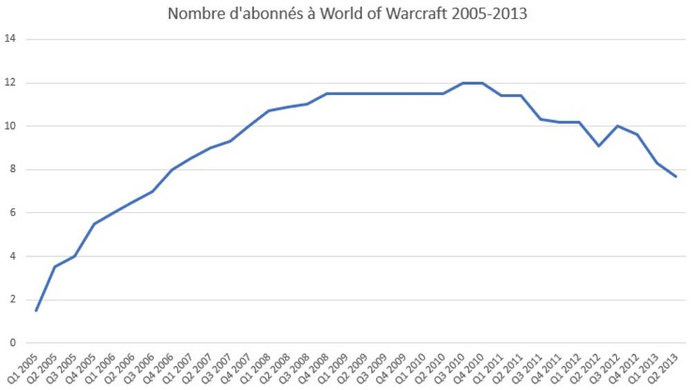
Several projects have come to life and represent the fantasies of MMORPGs very well. Among them, we can cite large-scale projects like:
The Copernicus project embodies several fantasies typical of developers of this kind of game: a vast and immersive world, a deep narrative, rich gameplay, high commercial ambitions, but also the challenges and risks inherent to these large-scale projects.
With everything I have told you before, you have every right to ask "But then why do you say this genre is in decline?". You are going to see right now.
For several years now, MMORPGs, and even the video game world in general, have been assisting players in absolutely everything so much that as soon as a single thing asks a minimum of effort from them, they complain.
On top of that, the market of this genre is very competitive, because there are so many titles and games of this kind that it is hard for the most indecisive players to pick a game. This type of game also not being easy to learn and get to grips with makes things even harder.
Obviously, players' preferences have evolved. Some got tired and others stayed loyal to their games, like WOW players. But most quietly migrated to games that take less time and are faster in general. For example, MOBAs with LOL and battle royales such as Fortnite or Apex. When I say that these games take less time, it is because an MMORPG asks for daily quests, events, raids or other group activities with 4, 8, 10, 20 or even 40 players at certain times. All of this takes more time and organisation than a 30-minute match on LOL.
With the exorbitant time that players have to devote, the terribly long levels to get through, like in LOTRO, where levelling up can take a whole day or even more, and the management of spells, potions, weapons and other elements, another reason comes on top of all this. MMORPGs are often criticised for having too many things on screen. I am not saying that it is the reason why they are in difficulty, but it is often what people tell me when we talk about this kind of game.
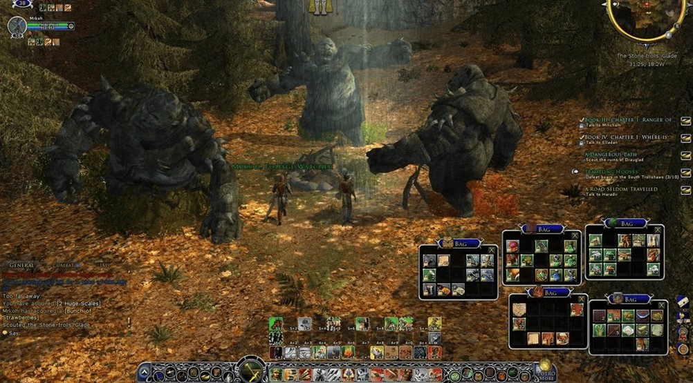
After spending so much time on an MMORPG, why migrate to another one and start again from zero? Players are not necessarily ready to give up their level 150 dwarf on LOTRO to go to New World. Me, for example, it is impossible to make my FF14 friends drop it to play Lost Ark…
Games of this kind are made to last over time. But lasting means updates and new things. Unfortunately, these new things sometimes bring the removal of old content that players enjoyed, which creates disappointment and nostalgia.
Moreover, an MMORPG demands constant maintenance and rigorous technical support, which can make the playing experience less enjoyable because of technical problems. For example, Lost Ark sometimes shuts down its servers for several hours for updates or technical problems, which prevents players from playing. Imagine how frustrating that can be if it happens during their only hours of play.
Seeing the gradual loss of interest of players for this genre, companies stopped producing as many of them, because developing one is extremely long and expensive, especially since most of them did not particularly generate revenue from players before subscriptions appeared.
To succeed, massively multiplayer experiences must set themselves apart from the games already present in the same genre and offer new facets in order to make their way between the giants that still dominate this genre.
The MMORPG genre brought a renewal to the video game world, making it possible to meet people from all over the world. The 2020 lockdown also put this genre in the spotlight, being the best way to socialise in those difficult times. But unfortunately, it did not last.
They are rich and inexhaustible, offering an infinity of possibilities and exploration. Travelling in a universe that you love, without a loading screen every minute, discovering varied landscapes and gigantic maps, taking part in massively multiplayer fights with friends or not, all of this is part of the very essence of these games.
MMORPGs can appeal to a wide range of players; there is literally something for every taste. I still hold hope that they come back in force and with great fanfare with the announcements that have come out. I am thinking in particular of the MMORPG on Dune and the one announced by Riot Games on the universe of LOL.
It can be scary, when you do not know this kind of game, to dive in headfirst, but if you give yourself time and you want to learn, you will discover a rich universe, full of possibilities and encounters that will give you an unforgettable experience.
Tifenn ROBIN
An article comparing four games that depict violence: two that offer it for its own sake, and two that use it to make the player think.
It looks at Hatred, Manhunt, Spec Ops: The Line and Hotline Miami.
Jump to a chapter:
We are all more or less fascinated by serial killers, and each of us admits it more or less easily. This morbid fascination is nothing new: as early as 1888, the sordid crimes of Jack the Ripper fascinated England, just as much as the atrocities committed by Jeffrey Dahmer, told in a very controversial documentary released on Netflix in 2022. The subject of serial killers and morbid curiosity raises the question of morality. When we talk about it, we can quickly drift toward the glorification of these individuals. This is, in my view, what the video game "Hatred" does, which was removed from the Steam platform because of the way it handles this subject.
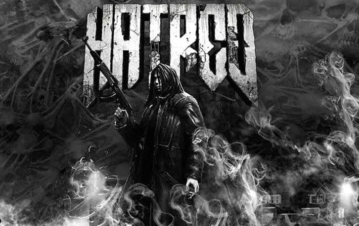
Hatred is an isometric-view shooter developed by Destructive Creations, released in 2015. You play a man who hates everything and everyone, and whose only goal is to exterminate the population, literally. "Hatred" is a game in which the "fun" comes from killing innocents. This has nothing to do with other games like GTA, which let the player commit atrocities while telling a story with characters and stakes, which go beyond the simple pleasure of depicting violence for what it is. Running over people in a pickup is "funny", but it is not the core of the gameplay. Even games with a deliberately sillier and more parodic approach, like Saints Row, use violence in an exaggerated way to provide entertainment.
Hatred, on the other hand, serves no message and takes its player into no reflection. Even games like Hotline Miami display a certain glorification of violence, but manage to question the player about their relationship with violence and the way they take pleasure from the game (the famous cutscene "You like hurting other people?"). But Hatred does none of this. It offers no philosophical or moral reflection, on the contrary, it almost encourages desensitisation to mass violence against civilians. This, coupled with the developers' openly racist and supremacist leanings, led to the game being removed by Steam for a while.
Destructive Creations spoke out, trying to justify their approach, saying, and I quote:
"Nowadays, when many games seek to be polished, colourful, politically correct and aspire to a form of art rather than being simple entertainment, we wanted to create something that goes against the trend."
The game Hatred seems to have behind it a misanthropic and provocative micro-community that feeds on the controversy surrounding the game. The latter caused strong reactions because of its extremely violent content, where the protagonist engages in a mass killing with no apparent motivation. It was criticised for its gratuitous depiction of violence and its lack of narrative context justifying the main character's actions. This approach led to debates about the limits of violence in video games and about developers' responsibility regarding content. Moreover, this community uses the game as a way to defy societal norms and provoke reactions, notably by opposing progressive and feminist movements in the video game world.
In conclusion, Hatred is a controversial game because of its violence, but also as the reflection of a fringe of the player community that seeks to provoke and to defy established conventions. But Hatred was not the only one to get people talking because of its violence, another game was also banned and very controversial, a game called Manhunt.
Manhunt is a series of stealth and action games developed by Rockstar North and published by Interactive, the first one being released in 2003. In this game, you play Earl Cash, a killer sentenced to death, who finds himself forced to take part in a snuff movie. To survive, he must kill or be killed.
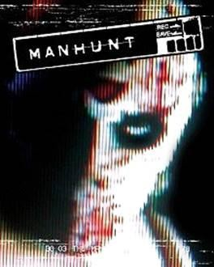
Manhunt puts the player in a position where they are obliged to commit violent acts to progress. This mechanic pushes the player to reflect on the nature of their actions and on the line between entertainment and morality. However, some critics consider that the game lacks psychological depth and relies mainly on graphic violence to build itself.
From its release, Manhunt caused controversy because of its graphic and explicit violence. Several countries, such as New Zealand, Germany and Australia, banned the game, calling it too violent to be distributed. In Germany, for example, the game was confiscated for violating the penal code, because it presented the murder of human beings as "fun" entertainment.
The Rockstar developers defended their game by presenting it as a social critique of media voyeurism and of the glorification of violence in the media. Christian Cantamessa, lead level designer, stated that the aim was to comment on media voyeurism, the promotion of violence as entertainment and the shortcomings of the American penal system.
The main difference between Manhunt and Hatred lies in their approach to violence. Manhunt tries to justify violence by integrating it into a narrative critical of voyeurism and of society, even if this justification is dubious and gives rise to many debates. On the other hand, Hatred is entirely in gratuitous violence, without seeking to contextualise or criticise it.
We have seen 2 very controversial games giving justifications to violence without questioning the players' choices and without making them reflect on their actions in video games. Now we are going to see 2 games that give a critical aspect on violence in games and that confront players about their choices. The first illustrates this perfectly, here is Spec Ops: The Line.
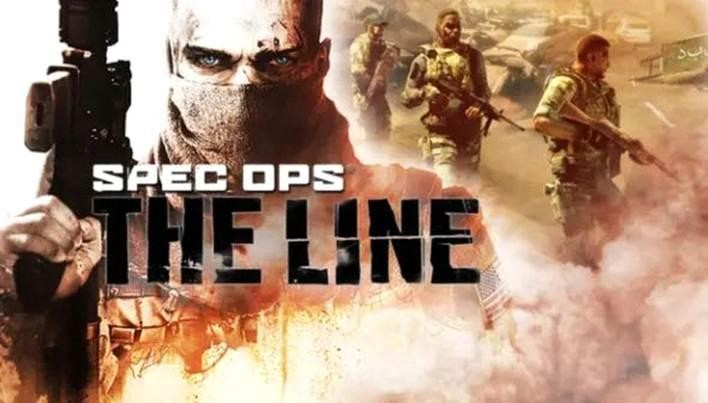
Spec Ops: The Line is a third-person shooter developed by Yager Development and published by 2K Games in 2012. The serial killer theme does not directly apply here, we are rather talking about war and violence in a military context. The player plays Captain Martin Walker, a member of the Delta Force, sent with his squad to Dubai to investigate the disappearance of Colonel John Konrad and his battalion, the 33rd Infantry Regiment. As the game progresses, Walker and his team are confronted with more and more troubling situations that challenge their perception of reality and their morality.
Unlike other games of the genre, Spec Ops: The Line uses violence as a means to criticise and deconstruct the recurring patterns of traditional war games. The game confronts the player with morally ambiguous choices and situations where the distinction between good and evil is very blurry. For example, one striking scene involves the use of white phosphorus, an incendiary weapon, against enemies, but which also causes civilian casualties. This sequence is designed to provoke a feeling of guilt in the player.
Spec Ops: The Line pushes the player to question the nature of their actions and the glorification of violence in video games. The game breaks the fourth wall by addressing the player directly, questioning them on their motivations and on their desire to continue despite the horrors encountered. This approach criticises players' complacency toward virtual violence and urges them to a deeper reflection on their choices in the game.
Unlike Manhunt and Hatred, Spec Ops: The Line uses violence to denounce its glorification in video games and to show the moral dilemmas faced by soldiers in wartime. The game puts the player face to face with their actions and confronts them with the consequences of their choices, unlike Manhunt and Hatred, which offer very little psychological depth.
Spec Ops: The Line stands out for its use of violence as a tool of critique and reflection, offering an experience that pushes the player to question not only their actions in the game, but also the way violence is represented and perceived in the video game medium.
To continue on games that question players about their violent actions we have Hotline Miami.
Hotline Miami is an independent action game released in 2012, developed by Dennaton Games. It got noticed for its ultra-fast gameplay, its highly stylised graphic violence and its retro psychedelic atmosphere. The player plays an amnesiac character in a universe that is both colourful and brutal, where each level turns into an explosion of blood and adrenaline.
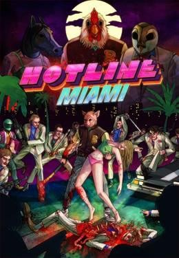
In the first levels, you just massacre people without really questioning yourself. Then, the further you go in the game, the more it confronts you with your actions, notably with the famous cutscene "Do you like hurting other people?" which serves as a real electric shock. It is delivered abruptly and in a destabilising way, inviting the player to wonder about the pleasure or the repulsion they draw from their violent acts in the game. The sequence uses a minimalist and often deconstructed aesthetic, characteristic of Hotline Miami, with glitchy images and a pulsing soundtrack that reinforce the disturbing atmosphere.
This question highlights the gap between the playful nature of the game and the brutal reality of the violence it depicts. The player finds themselves facing a mirror that reflects a part of their own complicity, without imposing a definitive judgement. This cutscene finally questions our relationship with violence and questions the very nature of violent entertainment.
The game offers to follow the feverish delirium of the main character, Jacket, while continually questioning his actions through psychological crises where we see our character talk to himself and to other masked characters who seem to be personalities of Jacket.
Just like in Spec Ops, the player is questioned on their actions and faced with the consequences. Although Spec Ops has a more "realistic" side through its graphics, Hotline Miami uses a particular aesthetic, similar to that of Hatred and Manhunt, but pushes the player to a deeper reflection.
The representation of violence in video games is a complex subject that raises questions of morality and responsibility.
Games like Hatred and Manhunt offer gratuitous violence, while others, like Spec Ops: The Line and Hotline Miami, use it to question the very nature of violence and to encourage reflection. These games do not just entertain, but push the player to question their actions and the way violence is perceived and experienced in the video game medium.
Tifenn ROBIN.
Where MMORPGs come from, why World of Warcraft took off, and why the genre lost its momentum.
Four games compared: two that show violence for its own sake, and two that use it to make the player think.
I'm from Brittany and I like my culture. Aside from video games, I'm passionate about astronomy.
My free time goes to drawing, painting my Warhammer figurines and learning about everything. When I read, it's comics, manga and novels, like those by Stephen King.
To stay active, I go to the gym but I also like to swim. I also love watching horror movies and true crime videos.
And I have a huge interest in Texan, Japanese and Korean cultures.
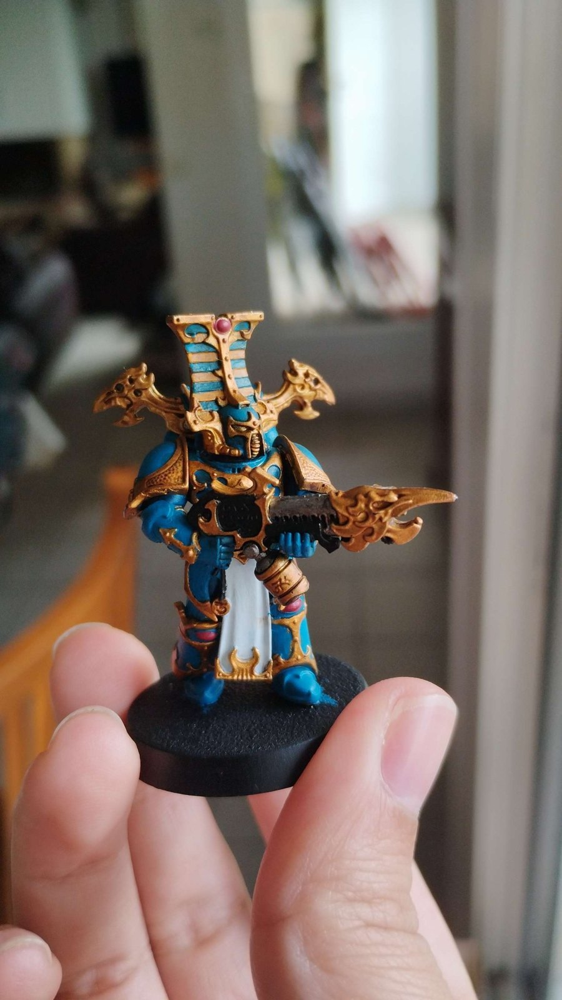
WarhammerPainted figurine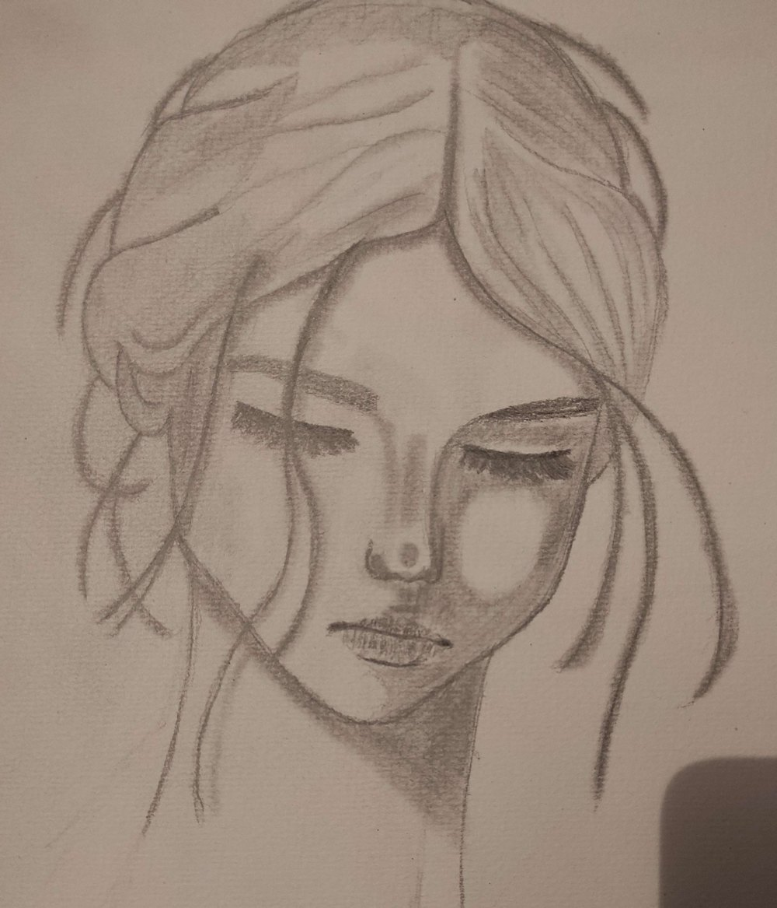
DrawPencil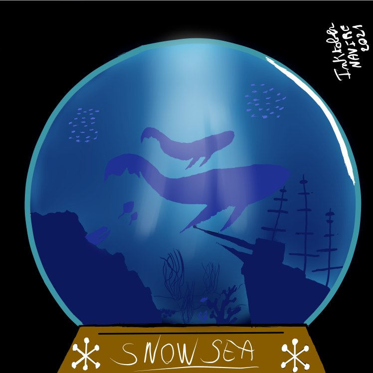
DrawGraphic tablet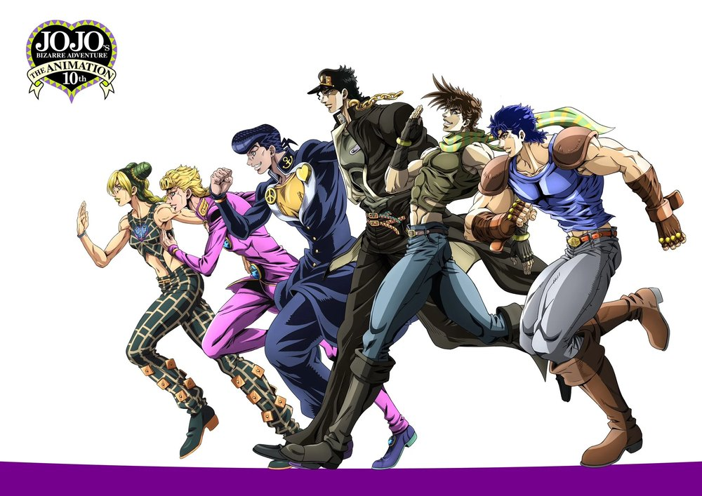
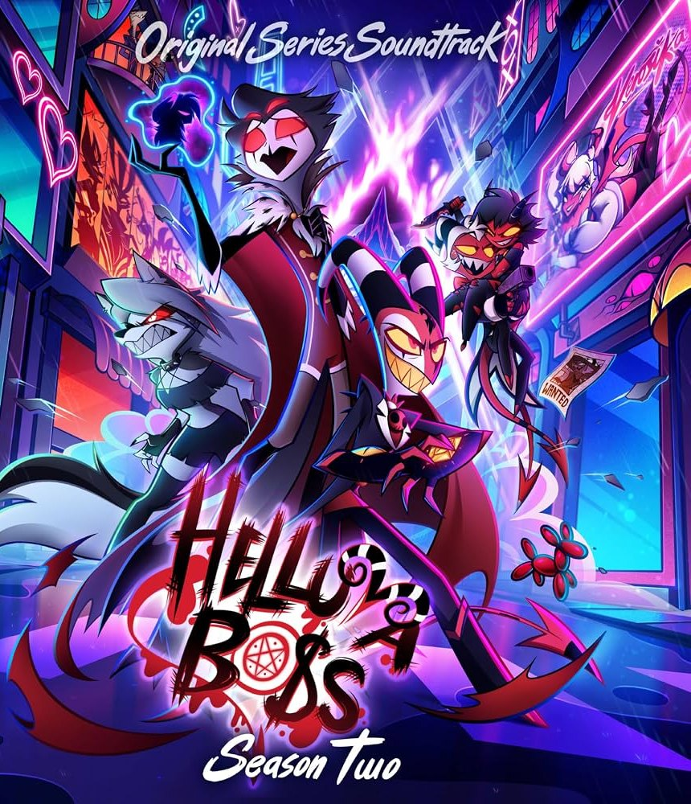
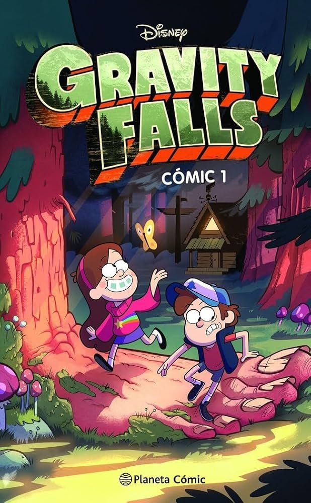
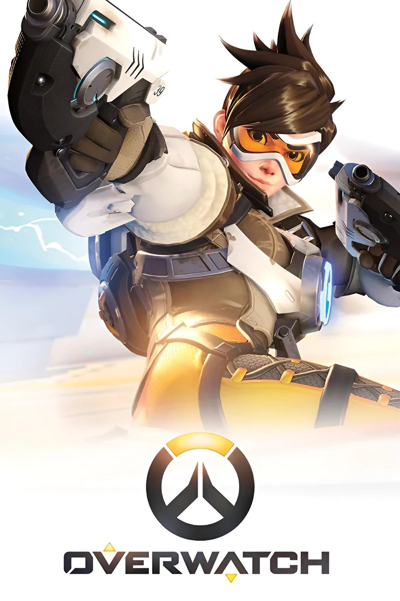
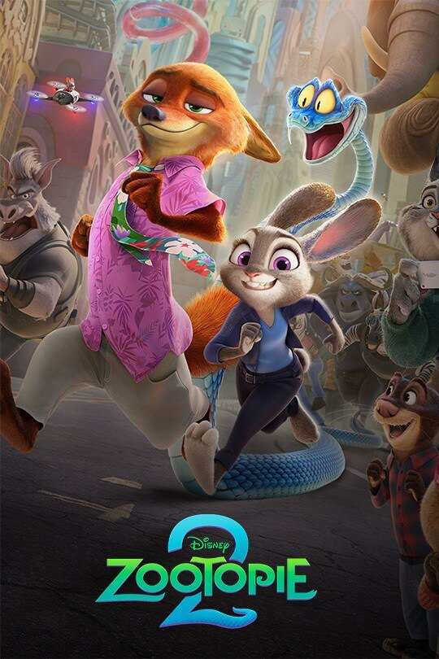
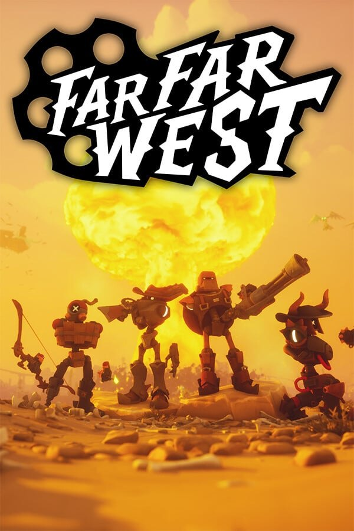
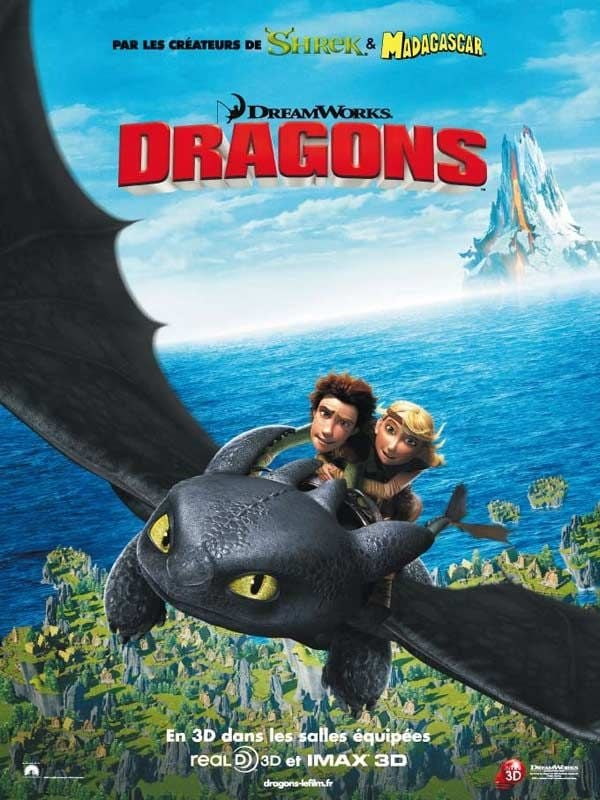
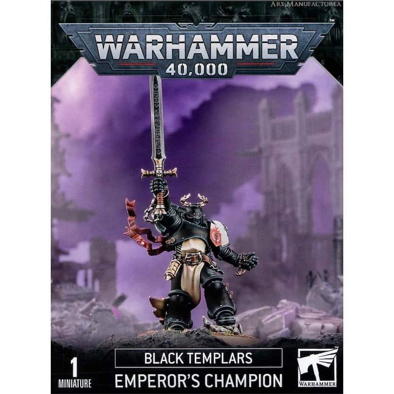
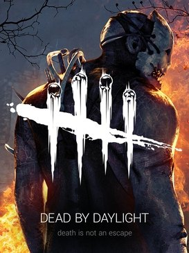
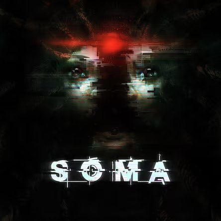
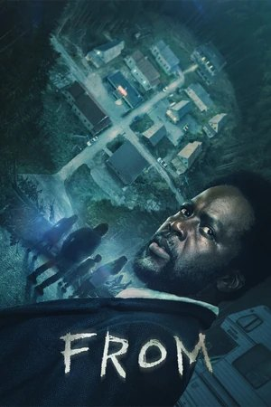
Your mail app should open with this message. If it did not, use the button below or copy the message and send it to tifenn.robin4@gmail.com.